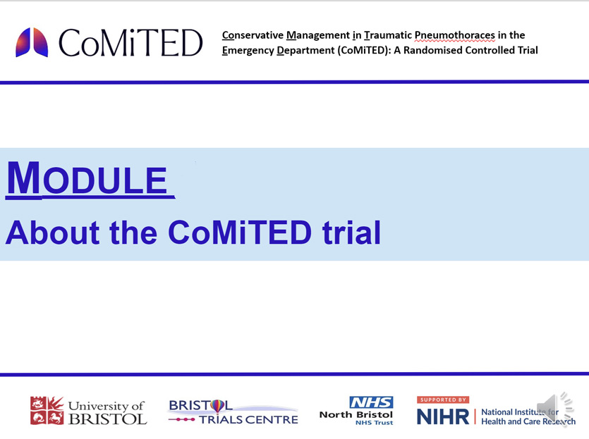
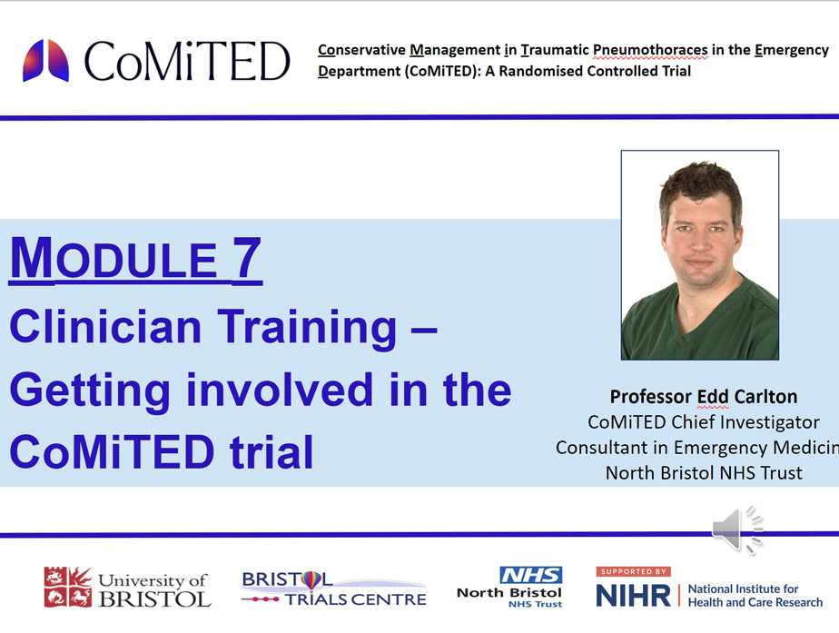
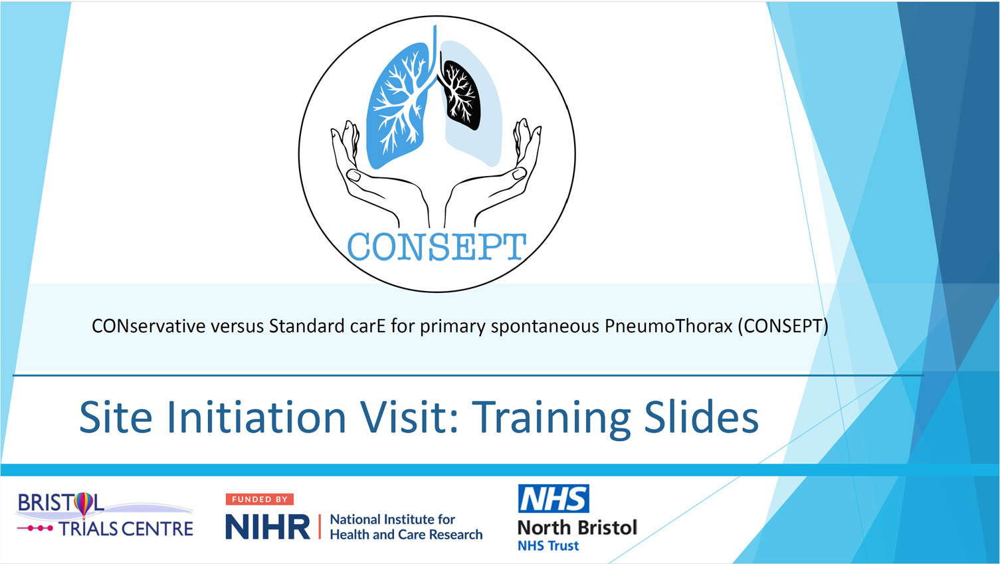
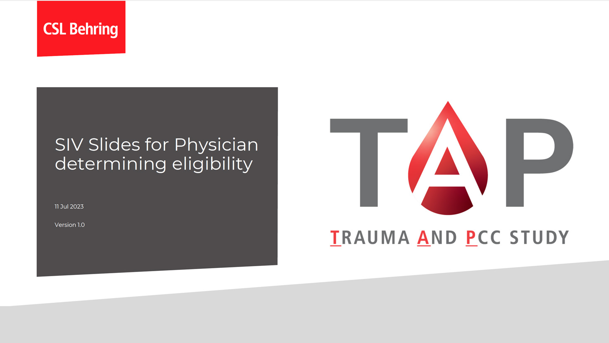

Training
Here you will find links to the training necessary to be able to enroll patients into the clinical trials we run

Good Clinical Practice (GCP)
Good clinical practice (GCP) online training
The GCP course is essential to be on the delegation log for many studies. It can be completed for free for employees, on the NIHR Learn site.
Once you have created your NIHR Learn account, you can view all courses and enrol onto the online GCP course.
There will be a link to GCP on the homepage. Click there and then find the “Enrol me” button
Performance on mobile phones has been variable; you may need to use this link on a desktop computer
When you have completed the course, Please email a copy of your certificate to the ED Research team at cuh.edresearchteam@nhs.net If you experience any problems with this please contact the ED Research team.
Create an NIHR Learn account
and access the GCP course here:
uDCD - A Feasibility Study of Uncontrolled Donation After Circulatory Death
Training video
Click here:

Empirical oral AntibioticS for possible UTI in well-appearing Young febrile infants (EASY)
In order to be able to enrol patients to the EASY study, you need only confirm you have read the protocol document and SIV slides, and hold a current GCP certificate. Once you have done these, please email the ED Research Team at: cuh.edresearchteam@nhs.net to arrange to sign the delegation log
In order to be able to authorised to confirm eligibility for the EASY study, you need only confirm you have read the protocol document and hold a current GCP certificate.
Protocol:
SIV slides:
Aspirin in patients with pneumonia
For the prevention of cardiovascular events
The study needs a doctor to prescribe. But to be able to do so, you have to have been trained on the study's training materials.
The training modules to prescribe for the study are accessible through the Emergency Department's sharepoint folder.
To access them, your device needs to be logged into your nhs.net account, then click on the link below.
THen click the last link to register on the online delegation log
You don't need GCP to prescribe for this study.
Click here:
Conservative care or drain insertion
In patients with traumatic pneumothorax
Training: if you are not eligible to enroll, please complete these steps outside of your clinical shifts:-
The training modules are accessible through the Emergency Department's sharepoint folder.
To access it, your device needs to be logged into your nhs.net account, then click on the links below.
(Alternatively, the modules can be found on the trial website
here.
You need a password to access the training pages, which can be obtained from the ED Research team.
For situations where a patient has capacity to give informed consent; listen to the short presentations in this folder (your trust email login will be needed to access the sharepoint folder):
Click here:
For situations where a patient lacks capacity, for any reason, to make decisions, you only need to listen through module 7, in this folder, as auto-enrolment is simpler. (If you have already listened to the presentations linked above, you have already completed this training):
Click here:
Once you've completed this training, please email the ED research team to inform them. They will provide a certificate of completion and add you to the delegation log.
You also need to hold a current GCP certificate. (GCP training links in the section at top)
Link for further information:
CoMITed - About the studyConservative care or drain insertion
In patients with primary spontaneous pneumothorax
In order to be authorised to enrol patients to the CONSEPT study, please read the slides linked below, then email the ED Research Team at: cuh.edresearchteam@nhs.net to arrange to sign the delegation log
Click here:

Intramuscular TXA in older patients with mild TBI
To reduce intracranial haemorrhage; diability; death; dementia
Intramuscular tranexamic acid for the treatment of symptomatic mild traumatic brain injury in older adults: a
randomised, double-blind, placebo-controlled trial
In order to be a prescriber, you simply have to watch these three videos (it takes 30 minutes in total):
Background & Rationale Video (12:06)Assessing Eligibility and Capacity to Consent (8:26)
Specific GCP for Crash4 (8:37) - Replaces the need for a GCP certificate. However, if you hold a current GCP certificate you don't need to watch this video.
Once you have watched the videos, please email the ED Reserarch team to confirm.
In order to be able to enrol patients to CRASH 4 there is a further hours’ worth of training to do which includes videos and PDF documents – to access these please contact the ED Research Team"
Comparing POP cast vs splint
In adults with distal radius fracture
In order to be authorised to enrol patients to the DRAFT-3 study, you need only confirm you have read the slides linked below, and hold a current GCP certificate. Please email the ED Research Team at: cuh.edresearchteam@nhs.net to arrange to sign the delegation log


PRINCE-SSP
Conservative care or drain insertion
In patients with spontaneous secondary pneumothorax
In order to be authorised to enrol patients to the PRINCE-SSP study, you need only confirm you have read the slides linked below, and hold a current GCP certificate. Please email the ED Research Team at: cuh.edresearchteam@nhs.net to arrange to sign the delegation log
Click here:

Beriplex in trauma patients with major haemorrhage
For improved survival
In order to be authorised to enrol patients to the TAP study, you need only confirm you have read the slides linked below, and hold a current GCP certificate. Please email the ED Research Team at: cuh.edresearchteam@nhs.net to arrange to sign the delegation log
Click here:
